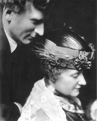

Saturday, July the 16th, 2011
back to: title, date or indexes
It may come as a relief to some readers to learn that I am done with Cornelius Cardew for the time being. I am now turning my attention to Percy Grainger. Thanks to Strange Flowers, we have already learned how to speak like the madcap Antipodean, and when I start reading the biography I have borrowed from the library I shall regale you with interesting snippets. For now, let us consider the title he gave to a pen-portrait of his mother:
“Mother's Wilfulness, Recklessness, Fearlessness, Bossiness, Violence If Opposed, Tendency To Burn Food When Cooking, Vehemence”

Percy and his Ma